In this section we explain the key concepts of InaSAFE and explore the merits of disaster management planning.
InaSAFE combines one exposure data layer (e.g. location of buildings) with one hazard scenario (e.g. the footprint of a flood) and returns a spatial impact layer along with a statistical summary and action questions. InaSAFE is framed around answering questions such as: ‘In the event of a flood similar to the 2013 Jakarta event how many people might need evacuating.’
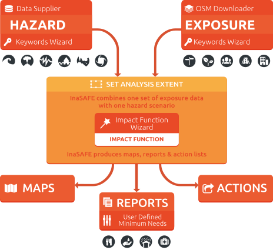InaSAFE is also able to divide the impact results by administrative boundary and provide a breakdown of information about the gender and age of affected people.
Before we start, here are some definitions you may find useful.
Risk assessment: |
“A methodology to determine the nature and extent of risk by analysing potential hazards and evaluating existing conditions of vulnerability that together could potentially harm exposed people, property, services, livelihoods and the environment on which they depend. “ |
Contingency planning: |
“A management process that analyses specific potential events or emerging situations that might threaten society or the environment and establishes arrangements in advance to enable timely, effective and appropriate responses to such events and situations.” |
Response: |
“The provision of emergency services and public assistance during or immediately after a disaster in order to save lives, reduce health impacts, ensure public safety and meet the basic subsistence needs of the people affected.” |
In the context of disaster management, the expected ‘normal’ situation is that there is no disaster in progress, and people are going about their normal daily lives. Disaster managers need to plan for the occasions when the ‘normal’ situation has been replaced by a disaster and people can no longer go about their normal daily lives. In order to prepare for such situations, disaster managers need to have a basic understanding of questions like:
how many people might be in the affected area?
how might those people be impacted?
For example are they likely to be injured, stranded, deceased, or unable to continue with their normal economic activities; have they lost access to food and water?
how will roads in the affected area be impacted?
how many dwellings in the affected will be affected? And to what degree?
For example in a flood are buildings dry, wet (but still possibly habitable) or flooded (with occupants evacuated)?
if people are affected, how many of them are likely to be women, children, pregnant, elderly etc.?
Knowing the likely answers to these questions can be helpful to disaster managers. For example if you are aware of how many people live in flood prone areas you can estimate how many temporary shelters might be needed in the event of a disaster, how many provisions should be stockpiled in order to provide for the daily needs of affected people and so on. Having demographic breakdowns for the people likely to be affected, can help disaster managers include things like special dietary requirements for lactating women in their disaster management planning.
This planning might also take into account expected impacts on infrastructure - for example by planning to have sufficient rescue boats should all the local roads be flooded.
In the context of InaSAFE a hazard is any natural or human caused event or series of events that may negatively impact the population, infrastructure or resources in an area.
Some examples of natural hazards:
a flood (caused by overflowing rivers, storm surge, localised precipitation that cannot drain effectively, or by engineering failure such as a dam or levee breach)
an earthquake and the resulting ground shaking that is produced by it
a volcano eruption and its associated hazards (lava flow, ash fall, lahar, pyroclastic flow)
a tsunami
Some examples of non-natural hazards:
a chemical spill
a nuclear plant failure
an industrial fire / explosion
It is important to note that InaSAFE is not a hazard modelling tool. That means that you need to obtain your hazard data from elsewhere and bring it along ready to use in InaSAFE. In this training course we will focus on natural hazards, so we will take a moment here to explain how hazard datasets might be made.
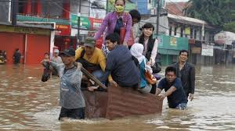There are three main ways that can be used to generate hazard datasets:
Local knowledge
Modelling
Mapping
This is probably the most practical way to gather hazard data quickly. One approach that has been effective in Indonesia is to hold mapping workshops where village chiefs and local officials are invited. The officials are asked to indicate which villages and sub-villages within their area of responsibility flood regularly.
Instead of simply mapping which areas are flooded, it is also possible to take another approach and map each flood event, using the same boundaries (village / sub-village). During the event community officials can use online systems to update the status of the flood waters in their area.
A key requirement for any local knowledge based process is that there are suitable mapping units available to use for deciding if an area is flood prone or not. In some cases participants may need to capture these, in other cases village or sub-village boundaries can be used. Using administrative boundaries may not always be ideal since the flood extents are unlikely to align well with the boundaries, but it may be sufficient for broad planning purposes; especially when response activities are managed at the same administrative level.
Modelling floods is an entire discipline in its own right. Flood modelling can be carried out by combining factors such as precipitation, geology and runoff characteristics, terrain etc. to derive a model of impending or current flood. Modelling can use data interpolation techniques - e.g. by taking flood depth readings manually or using telemetry from various sites around the flood prone area, flood depths can be interpolated to estimate the depth at places that were not sampled.
Another modelling approach used by engineers is to install depth sensors upstream of the catchment and then try to model how much water is coming into the catchment area based on depth and flow rates. This has the potential advantage of giving early warning before floods enter the flood prone area, although it also has the disadvantage that localised rainfall may not be accurately considered in the model.
Using a digital elevation model (DEM) and a stream network, it is also possible to generate a simple model of which areas might be inundated by a water rise in the river network of a certain amount. DEM cells adjacent to the stream network which are below the flood-rise threshold will be considered flooded and then those cell neighbours can in turn be considered so as to ensure that only contiguous areas in the DEM are flagged as inundated. There are various other approaches that can be used to model flood potential that involve using a DEM.
One advantage of using a modelling approach is that it allows us to forecast less frequent events. For example, there may not be localised knowledge about 1 in 50 or 100 year flood events and their impacts, but these can be estimated using modelling techniques.
Hazard data used in InaSAFE can represent either single-event or multiple-event. Single event hazards are useful when you want to estimate scenarios like ‘how many people would be affected if we had another flood like in 2013’. A single event hazard covers a short span of time - like a single flood or earthquake event. Single event data is also the most suitable to use for events which are stochastic e.g. earthquakes which seldom occur at the same place and with the same intensity more than once.
Multiple-event data are useful when you would like to plan for disasters that repeatedly affect the same area. For example over the course of 10 years, the same districts or sub-districts may get flooded, though not on every event. Flood and volcano eruptions may be good candidates for using multiple-event data in your disaster management planning.
Requirements for using flood data in InaSAFE
Key notes for floods |
|
|---|---|
Format |
Vector polygon data or raster data |
Vector |
A field representing whether the polygon is flood prone or not. |
Raster |
A simple grid with cell values that represent water depth |
Source |
Can be obtained from community mapping or a national mapping agency |
In the context of InaSAFE, exposure refers to people, infrastructure or land areas that may be affected by a disaster. Currently InaSAFE supports four kinds of exposure data:
roads
buildings
population / people
landcover
Road datasets are a useful data source when you want to understand the impact of a flood on roads infrastructure. With the InaSAFE flood on roads impact functions; you can calculate which roads of which type might be impacted by a flood.
Very often there will be national datasets available for roads. In this case you should contact your national mapping agency for up-to-date datasets. The OpenStreetMap project is an excellent source of exposure data. The data is freely available, generally well maintained and a vital resource for disaster management planners. There are numerous ways to download OpenStreetMap roads data, but our recommended way is to download the data using the OSM download tool provided with InaSAFE.
Key notes for road data |
|
|---|---|
Format |
Vector line data |
Field |
A field representing road type |
Notes |
Topologically correct data are best but not essential |
Source |
Can be obtained from community mapping or a national mapping agency |
Like roads, building footprints can be a useful dataset to have for understanding the impacts of a flood. For example you may wish to know ‘how many buildings might be flooded, and what types of buildings are they?’. In InaSAFE you do not need to use engineering quality data. We are more concerned with the numbers and types of structures affected by a disaster and do not work at engineering tolerances needed when, for example, planning a new water mains system.
Key notes for buildings data |
|
|---|---|
Format |
Vector polygon data |
Field |
A field representing building type |
Notes |
InaSAFE does not need ‘engineering quality’ data |
Source |
Can be obtained from community mapping or a national mapping agency |
Population data can often be obtained from your census bureau or through various online data sources. One problem with population data is that it is often quite coarse (represented using a raster with a large pixel size) and so analysis at large scales (e.g. a small neighbourhood) using population data may not always be the best idea. Currently InaSAFE only supports raster based census data, but in the near future we will be releasing a version that supports assigning population estimates to buildings using census data. One of the best online resources for population data is ‘WorldPop’ - a project that aims to provide population data for anywhere in the globe produced in a standardised and rigorous way.
Key notes for population data |
|
|---|---|
Format |
Raster ‘cell’ data |
Requirements |
Currently the data should be in EPSG:4326 CRS |
Notes |
Make sure you know if your data represent density or count |
Source |
Can be obtained from a national mapping agency |
Landcover data can often be obtained from national mapping agencies or through various online data sources. Landcover data are useful if you want to assess the impact of a hazard event such as a volcanic eruption on crops.
Key notes for landcover data |
|
|---|---|
Format |
Vector polygon data |
Field |
A field representing landcover type |
Notes |
Topologically correct data are best but not essential |
Source |
National mapping agency |
Places data can often be obtained from national mapping agencies or through various online data sources. Places data are useful if you want to assess the impact of a hazard event such as a volcanic ash event on place.
Key notes for places data |
|
|---|---|
Format |
Vector point data |
Field |
A field representing place name |
Notes |
There must be a field representing place name |
Source |
National mapping agency |
Aggregation is the process whereby we group the results of the analysis by district so that you can see how many people, roads or buildings were affected in each area. This will help you to understand where the most critical needs are, and to generate reports as shown in the image below. Aggregation is optional in InaSAFE - if you do not use aggregation, the entire analysis area will be used for the data summaries. Typically aggregation layers in InaSAFE have as attributes the name of the district or reporting area. It is also possible to use extended attributes to indicate the ratio of men and women; youth, adults and elderly living in each area. Where these are provided and the exposure layer is population, InaSAFE will provide a demographic breakdown per aggregation area indicating how many men, women etc were probably affected in that area.
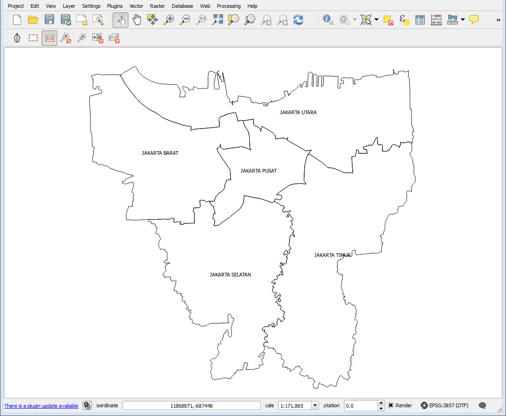Contextual data are data that provide a sense of place and scale when preparing or viewing the results of analysis, while not actually being used for the analysis. For example you may include online maps to show the underlying relief of the study area, or an aerial image to show what buildings and infrastructure exist in the area.
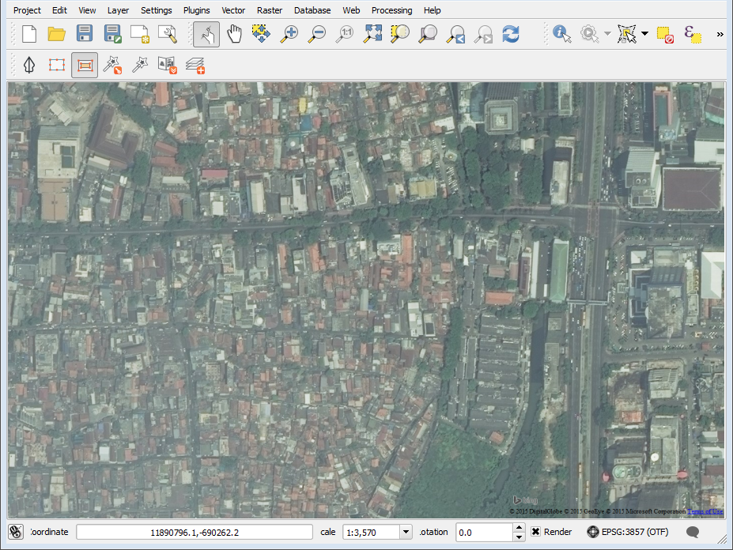Bing Aerial imagery for Jakarta, courtesy Bing Maps Open Layers
Vector data is arguably the most common kind of data you will find in the daily use of GIS. It describes geographic data in terms of points that may be connected into lines and polygons. Every object in a vector dataset is called a feature, and is associated with data that describes that feature. The basic shape of objects stored in the vector data is defined with a two-dimensional coordinate system / Cartesian (x, y).
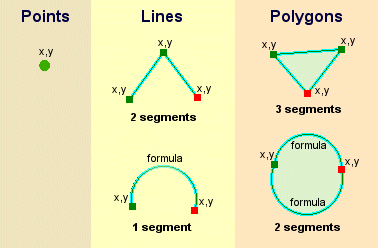Raster data is different from vector data. While vector data has discrete features constructed out of vertices, and perhaps connected with lines and/or areas; raster data, is like an image. Although it may portray various properties of objects in the real world, these objects don’t exist as separate objects; rather, they are represented using pixels or cells of various different numerical values. These values can be real and represent different characteristics of the geography, such as water depth or amount of volcanic ash; or they can be a code than is related to the type of land use or the hazard class.
Note
Creating vector data is like using a pen, where you can draw a point, a line or a polygon, Raster data is like taking a picture with a camera, where each square has one value, and all the squares (pixels) combine to make a picture.
Both vector and raster data can be used in InaSAFE. For example, we use vector data for the extent of a flood hazard and as well as roads and building footprint; but we use raster data for modelled hazards such as flood depth, tsunami inundation and for population exposure.
In InaSAFE we differentiate between data which is continuous and data which is classified. The terms can be applied equally to both hazard and exposure data. Continuous data represent a continuously varying phenomenon such as depth in meters, population counts and so on.
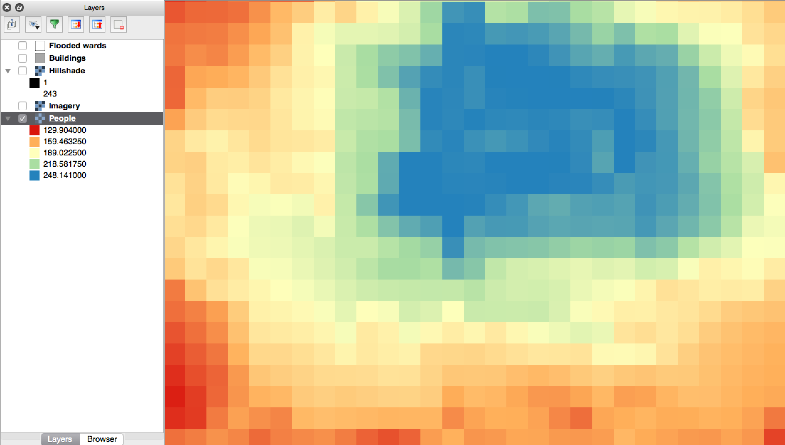Continuous population data - courtesy WorldPop
Classified data represent named groups of values, for example, high, medium and low hazard. Grouping values works well when you wish to reduce data preparation complexity or deal with local variances in the interpretation of data. For example, a flood depth of 50cm may represent a high hazard zone in an area where people commonly have basements in their houses, and a low hazard zone in areas where people commonly build their houses on raised platforms.
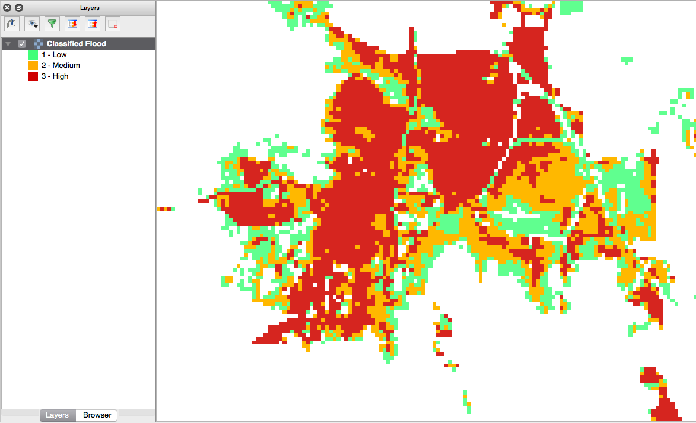Classified raster flood data - courtesy BNPB/Australian Government
In InaSAFE you need to explicitly state what the intended analysis extent should be. In other words, you need to tell InaSAFE where the analysis should be carried out. There is a tool in InaSAFE that will allow you to drag a box around the intended analysis area - you should always check that you have done this before starting your analysis.
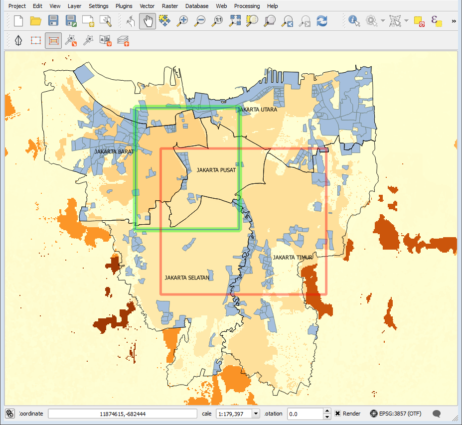InaSAFE will show you what your current desired analysis extent is (blue line in green box), what the extent of your last analysis was (red box in the image above) and what your effective extent is (green box in the image above). The effective extent may not correspond exactly to your desired analysis extent because InaSAFE always aligns the extent to the edge of raster pixels.
An Impact Function (often abbreviated to IF) is software code in InaSAFE that implements a particular algorithm to determine the impact of a hazard on the selected exposure. Running an impact function is done when you have prepared all your input data, defined your analysis extent and wish to now see the impact outputs.
Again, we should emphasise here that Impact Functions do not model hazards - they model the effects of one or more hazard events on an exposure layer. InaSAFE groups its impact functions according to the kind of hazard they work on:
Each Impact Function will generate outputs that may include: - an impact map layer - an impact summary - minimum needs - action checklists
An impact layer is a new GIS dataset that is produced as the result of running an impact function. It will usually represent the exposure layer. For example, if you do a flood analysis on buildings, the impact layer produced will be a buildings layer but each building will be classified according to whether it is dry, wet or flooded. InaSAFE will typically apply its own symbology to the output impact layer to make it clear which are the impacted buildings. This is illustrated in the image below.
It should also be noted that the impact layer will only include features / cells that occur within the analysis extent. All others will be ‘clipped away’. It is very important to remember this when interpreting the map legend and the impact summary (see section below) because they are only relevant to the analysis area. The impact layer is not saved by default. If you want to save this spatial data you need to do this yourself.
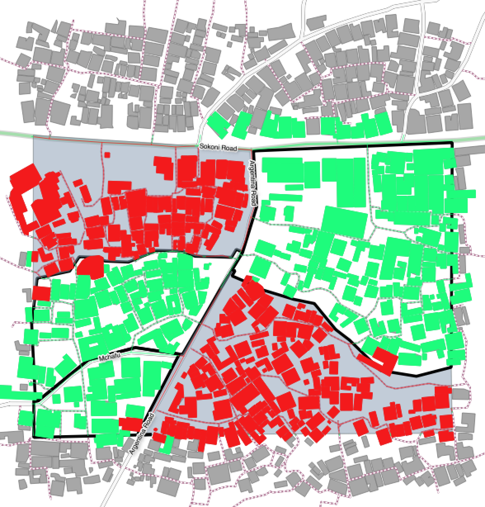Whereas the impact layer represents spatial data, the impact summary is tabular and textual data. The impact summary provides a table (or series of tables) and other textual information with the numbers of buildings, roads or people affected, and includes other useful information such as minimum needs breakdowns, action checklists and summaries. The impact summary presents the results of the impact function in an easy to digest form. Our expectation that the numbers show here would form part of the input to your emergency management planning process - typically as a launch point for discussion and planning on how to have sufficient resources in order to cater for the impacted people, buildings or roads should a similar event to the one on which the scenario is based occur. An example of an impact summary is shown below.
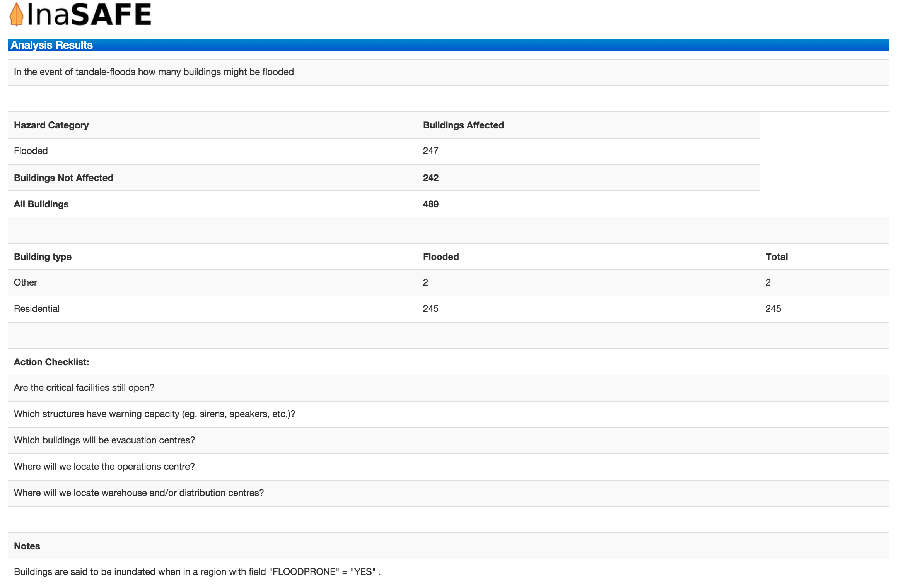Example impact summary table showing breakdown of buildings flooded.
Minimum needs are a population specific reporting component for the impact summary. They are based on generic or regional preferences and define the daily food and well-being requirements for each individual who may be displaced during a disaster. For example you could specify that each person should receive 20l of fresh drinking water per day, 50l of bathing water and so on. InaSAFE will calculate these numbers to provide an estimate of the total needs for the displaced population.
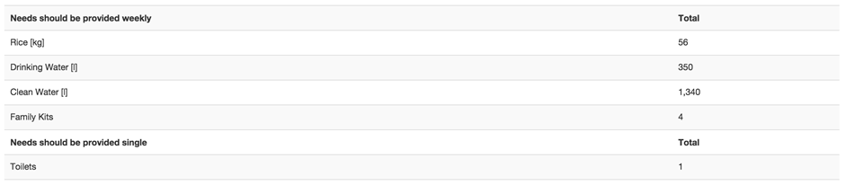Action checklists are generated lists of things disaster managers should consider when implementing their disaster management plan. Currently the action checklists are fairly simplistic - they are intended to prompt discussion and stimulate disaster managers to think about the important contingencies they should have in place.
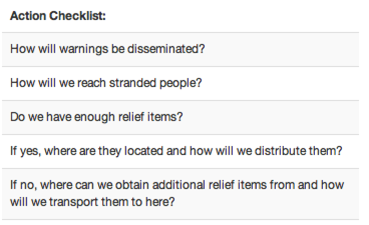{kind=link}
{kind=link}
{kind=link}
{kind=link}
{kind=link}
{kind=link}
{kind=link}
{kind=link}
{kind=link}
{kind=link}
{kind=link}
{kind=link}
{kind=link}
{kind=link}
{kind=link}
{kind=link}
{kind=link}
{kind=link}
{kind=link}
{kind=link}
{kind=link}
{kind=link}
{kind=link}
{kind=link}
{kind=link}
{kind=link}
{kind=link}
{kind=link}
{kind=link}